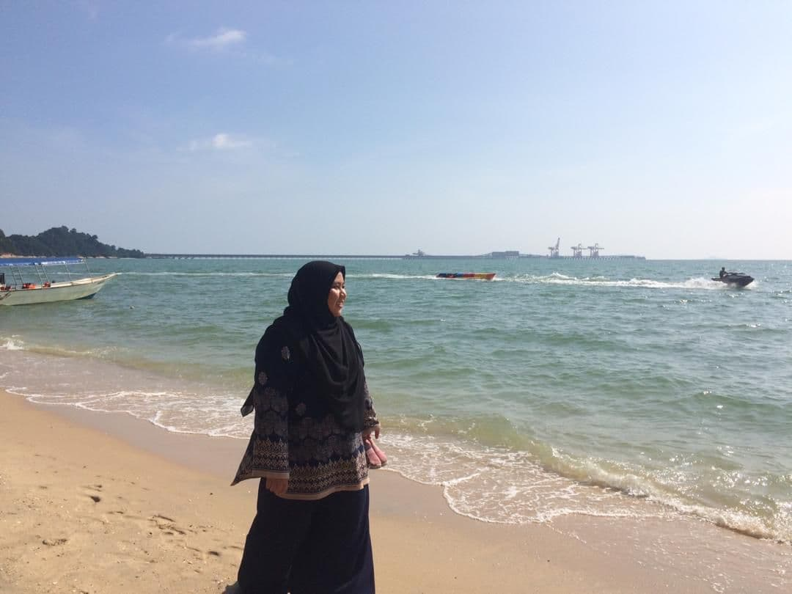

HOME
BIODATA
FAMILY
SCHOOL
EXPERIENCE
experience makes us more mature

i think everyone faced the same thing during this pandemic which is online distance learning (ODL). every single student have their own problems at home. just want to say, online learning is not easy as i thought. at first i was happy because i can stay at home but eveything not as expected. i lost my motivation for studies. i did'd know either i understand or not what my lecture teach. but i'm struggle asking my classmates, ask them to teach me, to lead me doing assignment together so that i can do my task well. And Alhamdulillah, everyone willing to share and help each other. i'm bless to have them as my classmates.
i pray that this pandemic gonna end soon, so that i can go back to my university. and have my normal life back as student.